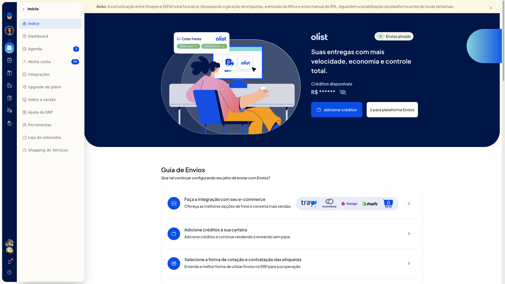
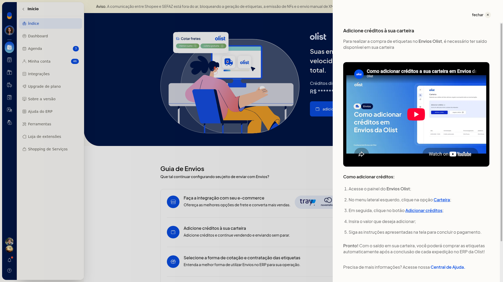

Adicionar créditos à carteira do Olist Envios
Na página Envios, você confere se o Envios da Olist está ativado, vê os créditos da carteira e adiciona saldo para comprar etiquetas.
O botão adicionar créditos e o atalho ir para plataforma Envios abrem a mesma carteira. Nela, você faz uma recarga manual com Pix ou cartão, ou programa uma recarga automática com cartão.
Pré-requisitos
- A conta precisa ter o Envios da Olist.
- Se Envios não aparecer na barra lateral de produtos, peça acesso ao administrador da conta.
Importante
- Recarga manual: o valor mínimo é de R$ 50,00.
- Recarga automática: use cartão de crédito, já salvo ou cadastrado na hora.
Instruções
Pela página Envios
-
Acesse Barra lateral de produtos > Envios.
-
Confira o aviso Envios ativado e o bloco Créditos disponíveis.

-
Clique em adicionar créditos.
-
Escolha Recarga manual. A opção indica Pix ou cartão, com mínimo de R$ 50,00.

-
Informe o valor no campo R$. O campo é obrigatório, em reais. A recarga mínima é de R$ 50,00.
-
Escolha PIX ou um cartão já salvo. Se não houver cartão, clique em adicionar cartão.
-
No painel Cadastrar cartão, preencha os campos obrigatórios: Número do cartão, Nome do titular, Data de vencimento (mês e ano), Código de segurança, Documento do titular e CEP do titular. Apelido é opcional. Para sair sem salvar o cartão, clique em voltar, feche o painel ou clique em cancelar.
-
Clique em continuar para seguir ao pagamento, com o valor e a forma escolhidos.
Recarga automática
- Abra Adicionar créditos pelo botão adicionar créditos na página Envios ou por Carteira > adicionar créditos.
- Escolha Recarga automática. A opção faz a recarga com cartão quando o saldo atinge o valor configurado.
- Preencha Quando o saldo estiver abaixo de. O campo é obrigatório e o valor é em reais.
- Preencha Recarregar o valor de. O campo é obrigatório e o valor é em reais, adicionado a cada recarga automática.
- Selecione um cartão salvo ou clique em adicionar cartão e preencha o painel Cadastrar cartão, como na recarga manual.
- Clique em continuar para programar a recarga com os dois valores e o cartão selecionado.
Pela Carteira
-
Na página Envios, clique em ir para plataforma Envios.
-
Se aparecer a tela de boas-vindas, clique em começar.
-
Acesse também menu lateral esquerdo > Carteira. A Carteira mostra adicionar créditos, resgatar créditos e a tabela de movimentações.

-
Clique em adicionar créditos.
-
Escolha Recarga manual ou Recarga automática. As opções são as mesmas da página Envios. Informe os valores, escolha a forma de pagamento e clique em continuar para seguir ao pagamento ou programar a recarga.
Informações adicionais
O Guia de Envios explica o caminho
Na página Envios, em Guia de Envios, o card Adicione créditos à sua carteira mostra o roteiro e o vídeo Como adicionar créditos a sua carteira em Envios da Olist. O painel também mostra o link Central de Ajuda. Não há campos para preencher.
O roteiro do painel é: acessar o painel do Envios, clicar em Carteira no menu lateral esquerdo, clicar em Adicionar créditos, inserir o valor e seguir as instruções da tela para concluir o pagamento.
Com saldo na carteira, as etiquetas podem ser compradas automaticamente depois de cada expedição no ERP.
